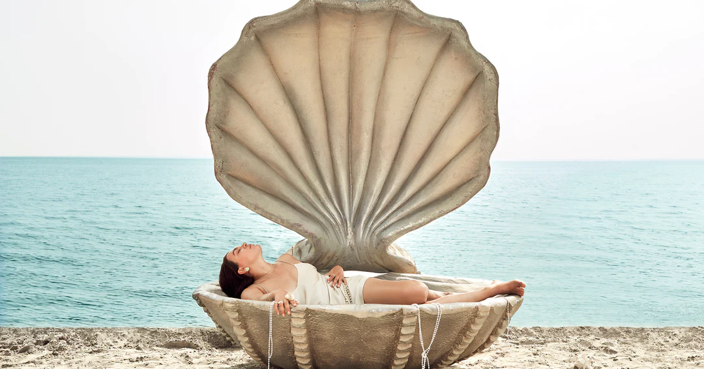
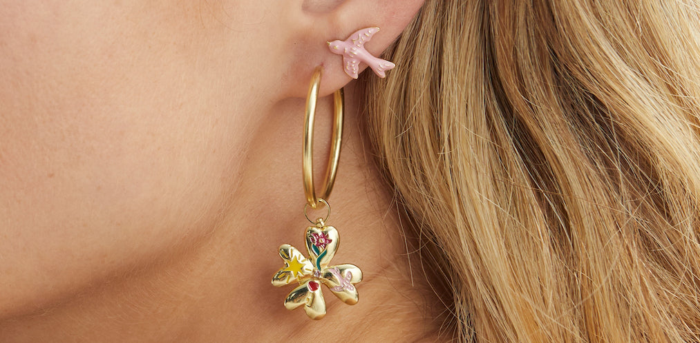
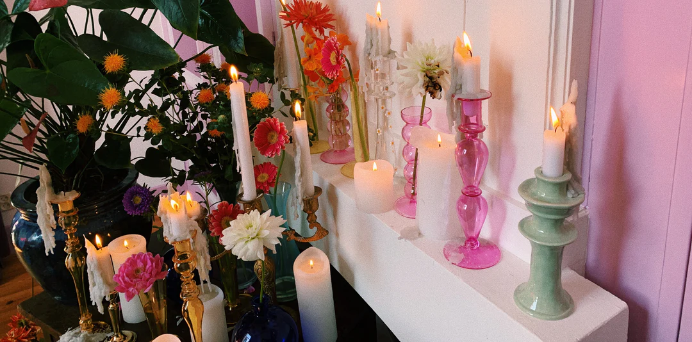
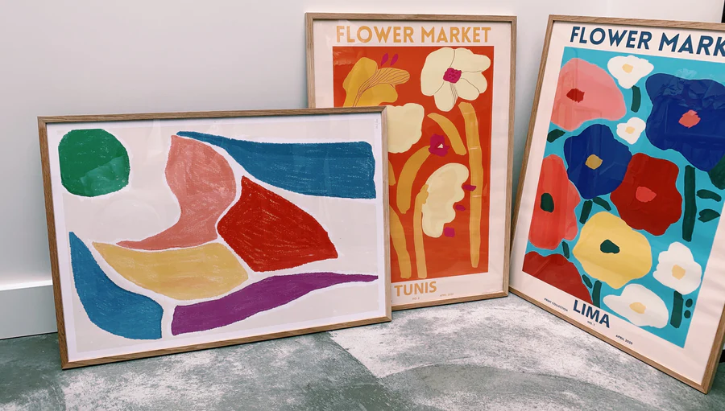
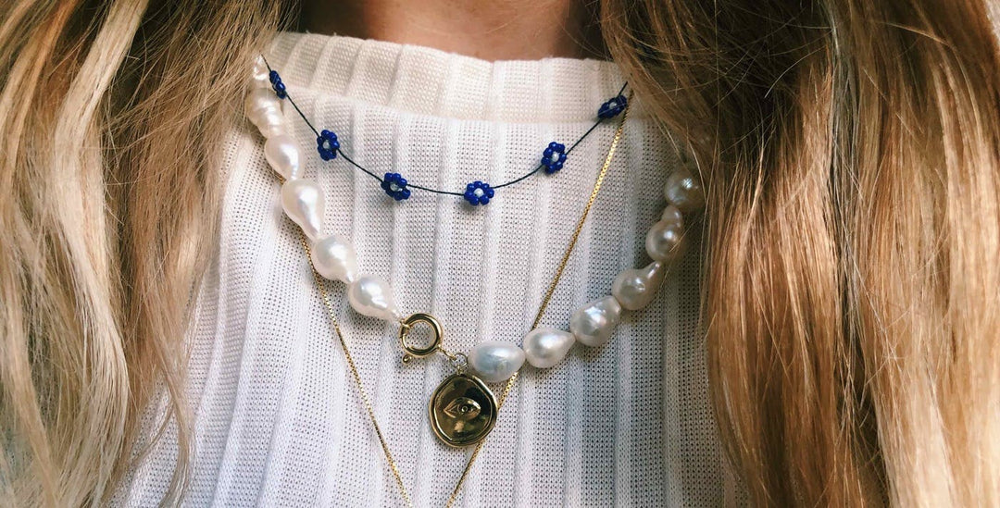

The New SS23 Jewellery Collection
Expect the unexpected as you explore the modern cabinet of curiosities, the Anna + Nina SS23 jewellery collection. Brimming with imaginative juxtapositions of traditional goldsmith practices with a contemporary botanical twist on modern jewellery collectables.
Published on February 07, 2023

The AN x ROMY homeware Collection
We are beyond excited to introduce our all-new AN x Romy Piercing Studio and collection. This collection will take the piercing experience to a new level, providing a unique emporium of simplistic and embellished piercing accessories that evoke a modern take on the classical earring decoration experience.
January 13, 2023
Tags: AN x ROMY An x Romy Piercing New Piercing

SS23 Homeware
Dive deep and explore a modern cabinet of curiosities, our new SS23 home collection overflowing with the extraordinary manifested as collectables splashed with underwater motifs.
March 07, 2023

Introducing our new preal collection
Our artful curation of FW22 homeware is a visual celebration. Bursting with colour, the collection combines bold and uplifting pieces that will transport you to a different era. Escape the ordinary and discover our FW22 homeware collection.
August 02, 2022

Vintage Curated by Carolien Spoor
Growing up in the antique shop of her parents, there is no better person to curate a one-of-a-kind vintage collection than actress Carolien Spoor. For this vintage drop we’ve asked her to make a selection of vintage pieces that we’ve never seen before, and to answer a few questions about her personal vintage curation, style inspiration, and heirloom pieces. Read our blog to get to know Carolien.
April 18, 2023

Easter Tablescaping
Get creative and experiment with dressing your table. We have a sweet spot for rich in colour and nature-inspired tableware; it’ll elevate every setting
April 12, 2022

Mi case es su casa
Our casa is the place where we currently spend most of our days, so we are bringing you a collection that makes staying at home feel like you travelled around the globe!
March 02, 2021

Interview with: Astrid Wilson
Growing up in the antique shop of her parents, there is no better person to curate a one-of-a-kind vintage collection than actress Carolien Spoor. For this vintage drop we’ve asked her to make a selection of vintage pieces that we’ve never seen before, and to answer a few questions about her personal vintage curation, style inspiration, and heirloom pieces. Read our blog to get to know Carolien.
April 18, 2023

Interview with: Atelier Labro's, Lisa Galenkamp
Are you just as in love with Astrid Wilson as we are? Are you just as curious about her world and want to know more about the stories behind her wonderful work? Keep reading, ‘cos we’ve only gone and interviewed her!
June 19, 2020